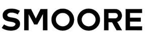

Trade Mark Journal No.2025/025 20 June 2025
UK00004214473 5 June 2025 (3,5,10,11)

- Class 3
- Aromatics [essential oils]; Perfumery; gargles, not for medical purposes; breath freshening sprays; essential oils; Essential oils for use in the manufacture of e-liquid; synthetic perfumery; Cosmetics; Cosmetic products in the form of aerosols for skin care; Non-medicated skincare preparations; skin cleansers; Perfumes; milky lotions for skin care; facial beauty masks; cosmetics for animals; serums for cosmetic purposes; non-medicated skin serums; skin moisturizers used as cosmetics; facial creams [cosmetics]; gels for cosmetic purposes.
- Class 5
- Menthol for pharmaceutical purposes; tobacco-free cigarettes for medical purposes; nicotine gum for use as an aid to stop smoking; nicotine patches for use as aids to stop smoking; pharmaceutical preparations for use in discouraging the smoking habit; chewing gum for medical purposes; smoking herbs for medical purposes; Mouthwashes [gargles] for medical purposes; Breath refreshers for medical purposes; nicotine pouches for use as aids to stop smoking; Cigarettes (Tobacco-free -) for medical purposes.
- Class 10
- Sprayers for medical purposes; Nebulisers for medical purposes; massage apparatus; apparatus for administering inhalants for medical purposes; Lasers for medical purposes; ear plugs [hearing protection devices]; testing apparatus for medical purposes; medical apparatus and instruments; thermometers for medical purposes; Apparatus for carrying-out diagnostic tests for medical purposes; sanitary masks; Electric esthetic massage apparatus for household purposes; esthetic massage apparatus; therapeutic facial masks; medical apparatus for facilitating the inhalation of pharmaceutical preparations; LED masks for therapeutic purposes; Ultrasonic therapy apparatus; vaporizers for medical purposes; Skin moisture analyzers for medical purposes.
- Class 11
- Air sterilizers; Evaporators; heating apparatus for solid, liquid or gaseous fuels; air purifying apparatus and machines; electric fans for personal use; cooling installations for tobacco; Humidifiers; tobacco roasters; heat regenerators; heating apparatus.
SHENZHEN SMOORE TECHNOLOGY LIMITED
Representative: Marcin Barczyk